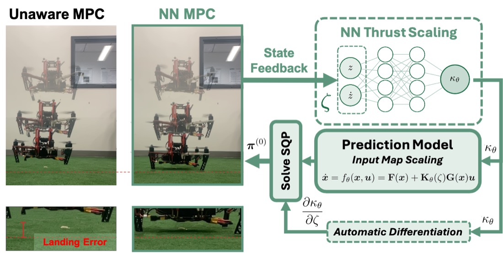
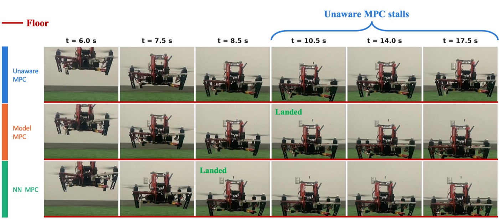

Real-time neural MPC for takeoff and landing under ground effect
The problem
Quadrotors spend their most safety-critical moments close to surfaces — taking off, landing, hovering low, manipulating. Operating near a boundary obstructs the rotor wake and reduces induced velocity, which changes how the vehicle responds to its own commands. For small multirotors the effect is not marginal: rotor-wake interactions can perturb delivered thrust by over 10% within the final half-metre of descent.
The awkward property is that ground effect is both fast and state-dependent, which means it has to be anticipated rather than rejected after the fact. An online estimator gives reliable corrections in steady flight, but it can never converge faster than its own filter dynamics — so during a rapid descent it is always behind. A predictive model can feed the correction forward instead, and then the question becomes how good that model is.
Classical thrust-ratio corrections assume a single rotor at constant height over a flat surface. Small multirotors satisfy none of that: their rotors share wakes, the effect depends strongly on forward velocity, and measurements diverge from classical predictions as scale decreases.
Related work, in one paragraph
Existing compensation is largely reactive — sliding mode control, adaptive frameworks, disturbance observers — and therefore bandwidth-limited in the same way an estimator is. Data-driven approaches followed: Shi et al. learn a ground-effect model from flight data and fold it into a nonlinear feedback law; Jiang et al. discard the physics entirely and learn the full translational dynamics from logs. Within optimal control, Data-Driven MPC and KNODE-MPC learn an additive residual for unmodelled effects. The difficulty is computational: putting a network inside an optimisation solved at flight rate is expensive. Real-Time Neural MPC addressed this by decoupling the network from the solver's symbolic graph and passing local Taylor approximations as parameters, making online cost independent of network size. But because the learned residual depends on both state and control input, the full neural Jacobian still has to be evaluated at every shooting node, every solver iteration.
The idea
Instead of learning an additive residual, learn a scalar thrust scaling — a gain on delivered thrust as a function of height and vertical velocity only. Because the network output does not depend on the control input, the dynamics stay control-affine, and the neural gradient entering the QP collapses from a dense Jacobian block to a single row per shooting node.
That structural choice is what buys the real-time behaviour. Exact gradients can be evaluated inside the solver rather than approximated offline, and the model keeps the control-affine property that makes explicit inversion and formal safety guarantees tractable downstream.

What the comparison looks like

This page covers the problem, the related work and the modelling idea. The quantitative results — terminal error, impact speed, tracking error and significance testing across the hardware flight campaign — are held back while the paper is under review.
Related work of mine
The same instinct runs through my other work: exploit the structure of the problem rather than fight it. In switch-time-aware hybrid MPC that means lifting the switching instant so the QP stays sparse and convex; here it means choosing a learned representation that keeps the model control-affine so the Jacobian stays thin.